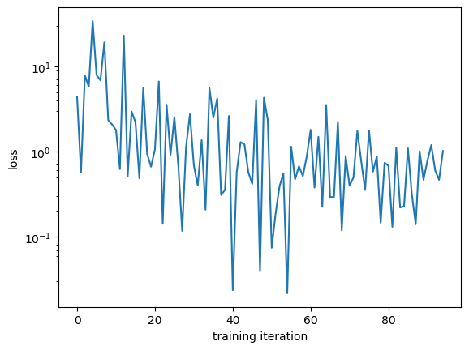

Property regression example¶
low level interface¶
To show how the components of NFFLr work together, let’s train a formation energy model using the dft_3d dataset. We can use the periodic_radius_graph transform to configure the AtomsDataset to automatically transform atomic configurations into DGLGraphs.
[1]:
from nfflr.data.dataset import AtomsDataset
from nfflr.data.graph import periodic_radius_graph
dataset = AtomsDataset(
"dft_3d",
target="formation_energy_peratom",
transform=periodic_radius_graph
)
dataset[0]
dataset_name='dft_3d'
Obtaining 3D dataset 76k ...
Reference:https://www.nature.com/articles/s41524-020-00440-1
Other versions:https://doi.org/10.6084/m9.figshare.6815699
Loading the zipfile...
Loading completed.
[1]:
(Graph(num_nodes=8, num_edges=288,
ndata_schemes={'Xfrac': Scheme(shape=(3,), dtype=torch.float32), 'coord': Scheme(shape=(3,), dtype=torch.float32), 'atomic_number': Scheme(shape=(), dtype=torch.int32)}
edata_schemes={'r': Scheme(shape=(3,), dtype=torch.float32)}),
tensor(-0.4276))
[7]:
dataset = AtomsDataset(
"/Users/bld/projects/nfflr/examples/poscar-folder-bandgap",
target="target",
transform=periodic_radius_graph
)
dataset[0]
dataset_name='/Users/bld/projects/nfflr/examples/poscar-folder-bandgap'
[7]:
(Graph(num_nodes=8, num_edges=288,
ndata_schemes={'Xfrac': Scheme(shape=(3,), dtype=torch.float32), 'coord': Scheme(shape=(3,), dtype=torch.float32), 'atomic_number': Scheme(shape=(), dtype=torch.int32)}
edata_schemes={'r': Scheme(shape=(3,), dtype=torch.float32)}),
tensor(0.))
Set up a medium-sized ALIGNN model:
[36]:
from nfflr.models.gnn import alignn
cfg = alignn.ALIGNNConfig(
alignn_layers=2,
gcn_layers=2,
norm="layernorm",
atom_features="embedding"
)
model = alignn.ALIGNN(cfg)
atoms, target = dataset[0]
model(atoms)
[36]:
tensor(0.2098, grad_fn=<SqueezeBackward0>)
[31]:
import numpy as np
import torch
from torch import nn
from torch.utils.data import DataLoader, SubsetRandomSampler
batchsize = 2
train_loader = DataLoader(
dataset,
batch_size=batchsize,
collate_fn=dataset.collate,
sampler=SubsetRandomSampler(dataset.split["train"]),
drop_last=True
)
next(iter(train_loader))
[31]:
(Graph(num_nodes=71, num_edges=1192,
ndata_schemes={'Xfrac': Scheme(shape=(3,), dtype=torch.float32), 'coord': Scheme(shape=(3,), dtype=torch.float32), 'atomic_number': Scheme(shape=(), dtype=torch.int32)}
edata_schemes={'r': Scheme(shape=(3,), dtype=torch.float32)}),
tensor([2.4720, 0.0000]))
Now we can set up a PyTorch optimizer and objective function and optimize the model parameters with an explicit training loop. See the [PyTorch quickstart tutorial for more context)[https://pytorch.org/tutorials/beginner/basics/quickstart_tutorial.html].
[32]:
from tqdm import tqdm
criterion = nn.MSELoss()
optimizer = torch.optim.AdamW(model.parameters(), lr=1e-3, weight_decay=0.1)
training_loss = []
for epoch in range(5):
for step, (g, y) in enumerate(tqdm(train_loader)):
pred = model(g)
loss = criterion(pred, y)
loss.backward()
optimizer.step()
optimizer.zero_grad()
training_loss.append(loss.item())
100%|██████████| 19/19 [00:04<00:00, 3.80it/s]
100%|██████████| 19/19 [00:04<00:00, 3.84it/s]
100%|██████████| 19/19 [00:04<00:00, 4.03it/s]
100%|██████████| 19/19 [00:04<00:00, 4.05it/s]
100%|██████████| 19/19 [00:04<00:00, 4.00it/s]
[33]:
import matplotlib.pyplot as plt
%matplotlib inline
plt.plot(training_loss)
plt.xlabel("training iteration")
plt.ylabel("loss");
plt.semilogy();

using the ignite-based NFFLr trainer¶
[34]:
import tempfile
from nfflr import train
[37]:
rank = 0
training_config = {
"dataset": dataset,
"model": model,
"optimizer": optimizer,
"criterion": criterion,
"random_seed": 42,
"batch_size": 2,
"learning_rate": 1e-3,
"weight_decay": 0.1,
"epochs": 5,
"warmup_steps": 100,
"num_workers": 0,
"progress": True,
"output_dir": tempfile.TemporaryDirectory().name
}
train.run_train(rank, training_config)
2023-06-08 07:31:34,434 ignite.distributed.auto.auto_dataloader INFO: Use data loader kwargs for dataset '<nfflr.data.dataset.':
{'collate_fn': <function AtomsDataset.collate_default at 0x293eda560>, 'batch_size': 2, 'sampler': <torch.utils.data.sampler.SubsetRandomSampler object at 0x2c9fb2c50>, 'drop_last': True, 'num_workers': 0, 'pin_memory': False}
2023-06-08 07:31:34,434 ignite.distributed.auto.auto_dataloader INFO: Use data loader kwargs for dataset '<nfflr.data.dataset.':
{'collate_fn': <function AtomsDataset.collate_default at 0x293eda560>, 'batch_size': 2, 'sampler': <torch.utils.data.sampler.SubsetRandomSampler object at 0x2c984f790>, 'drop_last': True, 'num_workers': 0, 'pin_memory': False}
starting training loop
train results - Epoch: 1 Avg loss: 0.11
val results - Epoch: 1 Avg loss: 3.52
train results - Epoch: 2 Avg loss: 6.07
val results - Epoch: 2 Avg loss: 3.54
train results - Epoch: 3 Avg loss: 14.54
val results - Epoch: 3 Avg loss: 0.19
train results - Epoch: 4 Avg loss: 0.23
val results - Epoch: 4 Avg loss: 3.54
train results - Epoch: 5 Avg loss: 0.09
val results - Epoch: 5 Avg loss: 3.45
[37]:
3.4533848762512207
[38]:
!ls
atoms.ipynb property-regression.ipynb test.ipynb
[ ]: